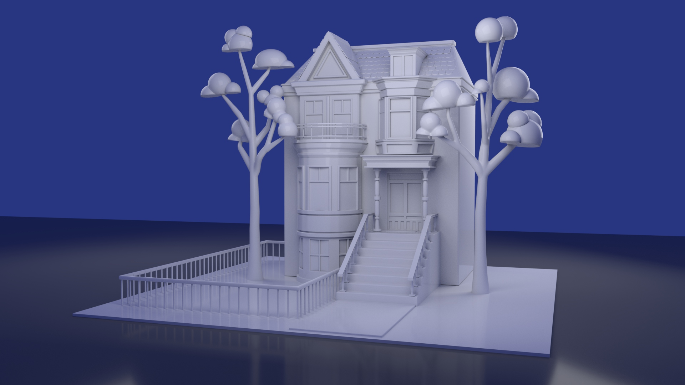

Low Poly Diorama
This is a low poly diorama of a mushroom island made with Blender. Concept and models are all done by me.
3D Appartment
This is a 3D render of an appartment building made with Maya. The concept is inspired by Montreal architecture in the Plateau Area.
Castle
This is a 3D render of a castle made with Maya. It was inspired by the animated show Sailor Moon.
Vintage Telephone
This is a render of a vintage telephone I modeled and textured using Maya.
Coffee Shop
This is a render of a cafe I invented. It was modeled and textured in Maya.
3D Room
This is a room I modeled for my short thesis film in Maya.
Vaporwave
This is a 3D render of a vaporwave inspired club made in Blender. This was a group project and I was in charge of modeling the furniture as well as lighting.